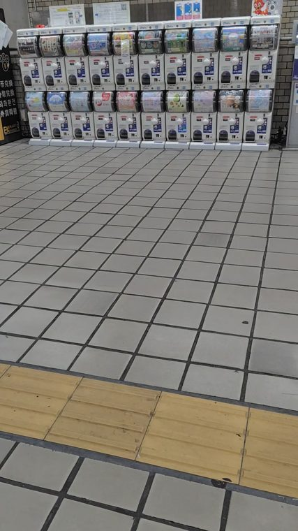
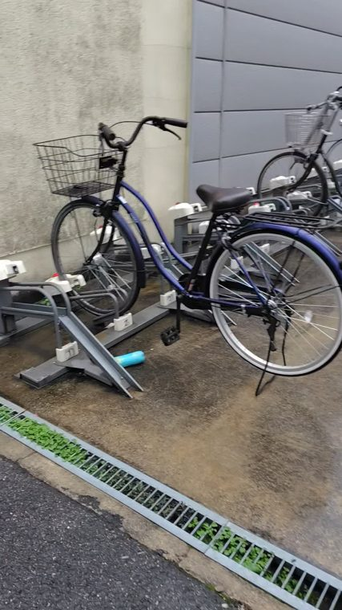

つみかず
Everyday Japan
日本の日常を、写真と音で。
これは何？
「Everyday Japan」は、日本の日常を写真とその場の音で届けるWebアプリです。観光地のきれいな写真集ではなく、通勤の駅、商店街、自転車置き場、雨上がりの道――ふだんの日本そのままを撮っています。
想定している読者は、旅行で日本に来たことがある人、そして来たくても来られない海外の人です。「また日本にいる気分」を味わってもらえたら、という思いで作りました。
使い方はシンプルです。写真をタップすると、その場所の音がループ再生されます。もう一度タップすると止まり、別の写真をタップすると切り替わります。
アプリを開くどんな場面があるか



現在16場面を公開しています。駅のエスカレーター、ガチャガチャの音、神社の絵馬が風に揺れる音、川の飛び石、雨上がりの静けさなど、派手ではないけれど「日本の日常らしい」場面を選んでいます。
短い動画版はYouTubeとTikTokにも出しています。意外なことに、有名な観光地や紅葉よりも、絵馬や雨上がりのような「日常だけど珍しい」題材のほうが海外の人に見られています。絵馬と雨上がりの動画は、それぞれ1,000回以上再生されました。
撮影のこだわり
- 音はその場の環境音を15〜30秒ほど録ります。BGMは足しません。
- 顔が分かる人は入れません。写る場合も足元だけにします。
- 家やベランダなど、場所が特定されてしまう写真は公開しません。
- 「だめなものは使わない」が基準です。過去の場面にも同じ基準を当てています。
題材はこれからも日常の中から探します。神社の朝、お好み焼きの鉄板、夕方のチャイム、夜の自動販売機――候補はいくらでもあります。
動画で見る
YouTubeチャンネル「つみかず」とTikTokで、同じ題材の短い動画を出しています。アプリの写真と合わせて楽しんでもらえたらうれしいです。